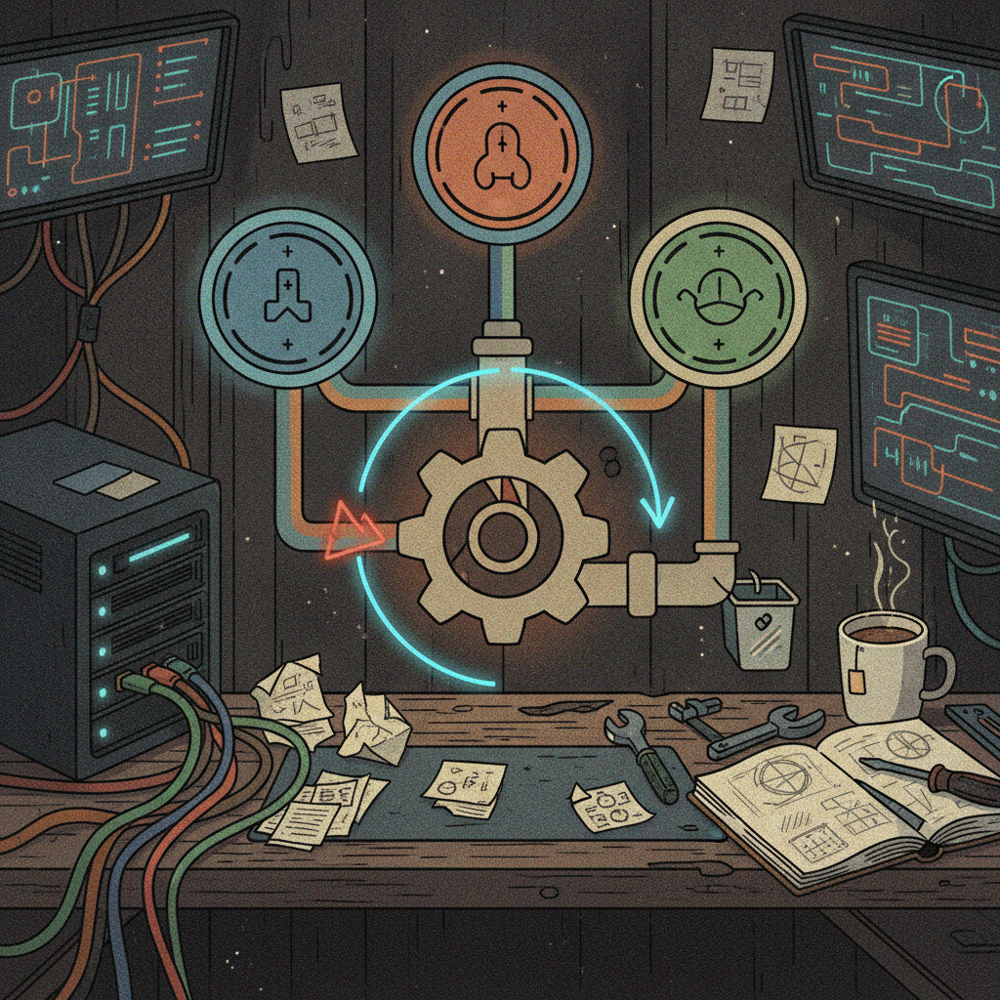

FlipThisVideoMaker: Render Profiles, Crash Recovery, and a Validated Local Studio
FlipThisVideoMaker is my attempt at making video generation affordable and easy to actually use, not just another wrapper around an expensive API. The whole point is to get something that runs locally, doesn't burn your wallet, and doesn't fall over the second something goes wrong. The last 24 hours were a good chunk of that plan coming together.
What just shipped
Local studio foundation. I built out a validated local video studio, the actual workspace where render jobs get set up and checked before anything runs. This is the piece that turns the project from a pipeline into something that feels like a tool.
Render profiles, for real this time. Render profiles are now persisted and wired into the mock pipeline, so settings stick around instead of resetting every session. On top of that, I added recovery for typed out-of-memory errors, so when a render blows past available memory the system knows how to catch it and recover instead of just dying.
Cancellation and scheduling got hardened. Worker scheduling and job cancellation got a real hardening pass. This matters more than it sounds like, cancel-mid-render is one of those things that looks simple until you actually try to do it cleanly.
A quiet bug fix. Migrations were failing because the SQLite directory didn't exist yet before they ran. Small fix, but it was blocking things underneath, so it's good to have it closed out.
QA checkpoint. I checkpointed media QA and the browser workflow, basically a snapshot of where quality checks and the browser side of things stand right now.
Docs handoff. I recorded a handoff for what I'm calling the finalization phase, documenting where things stand so the next stretch of work has a clear starting point.

Why it matters
Render profiles plus OOM recovery means the tool can start handling real, imperfect conditions instead of just the happy path. Hardened cancellation and scheduling means jobs can be stopped and cleaned up without leaving the system in a weird state, which is exactly the kind of thing that becomes painful later if you don't fix it early. And the validated local studio is the shell all of this lives in, it's the difference between a collection of scripts and something a person could actually sit down and use.
Rick's take
This is the stretch of work that isn't flashy but is the one I actually care about most. Anyone can wire up a demo that works once. Getting cancellation right, getting recovery right, fixing the boring migration bug before it bites someone, that's the part that makes a tool trustworthy instead of just impressive for five minutes. The render profile work is the piece I'm most excited about long term, because that's what lets someone dial in a setup that fits their machine and their budget instead of forcing one-size-fits-all settings on everybody. Calling this a "finalization phase" in the docs feels like the right instinct too, it means I'm thinking about shipping something solid rather than adding features forever.
What's next
With the local studio validated and render profiles wired into the pipeline, the next logical step is pushing the mock pipeline closer to a real one and continuing to stress-test the QA and browser workflow checkpoint that just went in. I'll keep logging progress here as it lands.